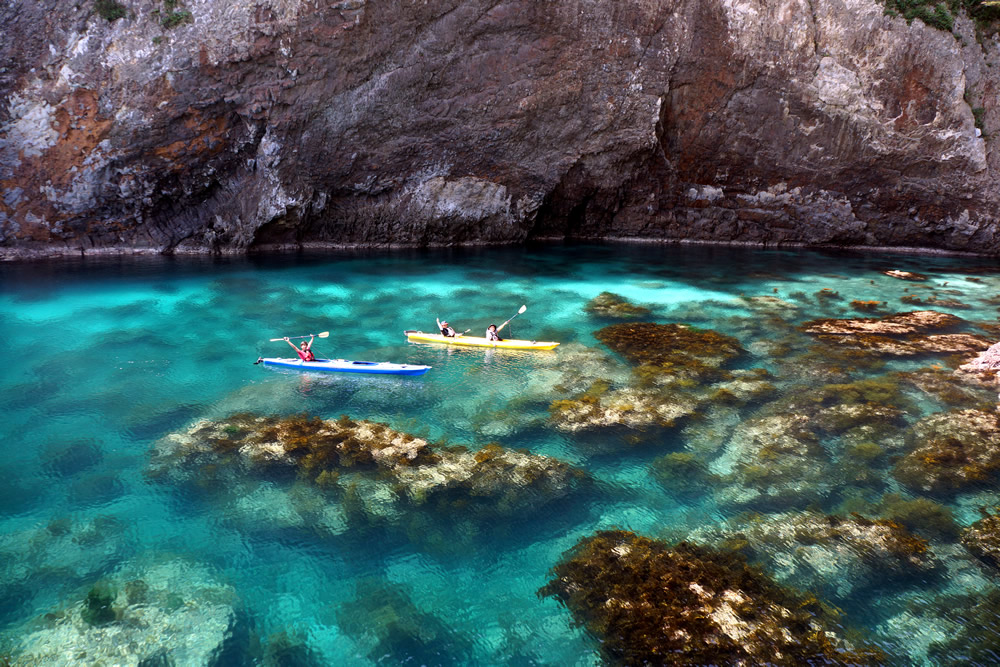

Découvrez le Japon secret : San'in & les îles Oki
Voir le circuit de 10 joursPourquoi San'in & Oki ?
⛩️ Culture
Izumo Taisha, artisanats, traditions vivantes.

üåä Nature
Dunes de Tottori, falaises volcaniques, paysages marins.
üç∂ Gastronomie
Saké, fruits de mer, cuisine locale.
À propos
Notre agence propose des circuits exclusifs au Japon, spécialement conçus pour les voyageurs français en partenariat avec les agences locales.